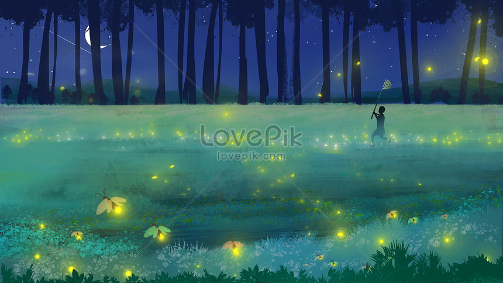

뒤로가기
여름밤은 아름답구나.
여름밤은 뜬눈으로 지새우자.
아들아, 내가 이야기를 하마.
무릎 사이에 얼굴을 꼭 끼고 가까이 오라.
하늘의 저 많은 별들이
우리들을 그냥 잠들도록 놓아주지 않는구나.
나뭇잎에 진 한낮의 태양이
회중전등을 켜고 우리들의 추억을
깜짝깜짝 깨워놓는구나.
아들아, 세상에 대하여 궁금한 것이 많은
너는 밤새 물어라.
저 별들이 아름다운 대답이 되어줄 것이다.
아들아, 가까이 오라.
네 열 손가락에 달을 달아주마.
달이 시들면
손가락을 펴서 하늘가에 달을 뿌려라.
여름밤은 아름답구나.
짧은 여름밤이 다 가기 전에
(그래, 아름다운 것은 짧은 법!)
뜬눈으로
눈이 빨개지도록 아름다움을 보자.
